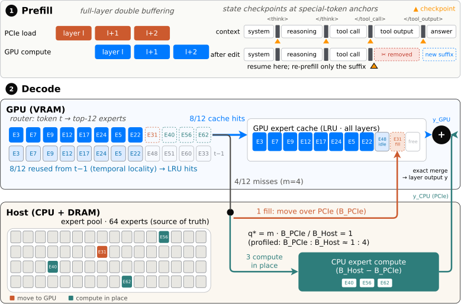

Think of VRAM as a small desk and host RAM as a bookshelf. A missing expert can be carried to the desk (PCIe) or read at the shelf (CPU). FreeToken does both at once and splits the pile so both finish together; how it splits depends on how fast each path is on your machine.
VRAM을 작은 책상, 호스트 RAM을 책장이라고 생각하면 쉽다. 필요한 전문가가 책상에 없으면 책상으로 가져오거나(PCIe) 책장 앞에서 바로 읽을 수 있다(CPU). FreeToken은 둘을 동시에 하되 두 쪽이 같이 끝나도록 나눈다. 얼마씩 나눌지는 내 기계에서 각 길이 얼마나 빠른지로 정해진다.
The system in one figure한 장으로 보는 시스템
Two phases, two different bottlenecks. Prefill moves almost the whole expert pool, so the job is hiding transfer; decode touches only a few experts, so the job is serving the misses well.
단계가 둘이면 병목도 둘이다. prefill은 전문가를 거의 전부 옮기므로 전송을 숨기는 게 관건이고, decode는 전문가 몇 개만 쓰므로 미스를 잘 처리하는 게 관건이다.

- Prefill: overlap transfer with compute.prefill: 전송과 계산을 겹친다.Load layer l+1 while the GPU runs layer l; state checkpoints at tool-call tags mean an agent's edit re-prefills only the new part.GPU가 l층을 도는 동안 l+1층을 싣는다. 도구 호출 태그 위치의 상태 체크포인트 덕에 에이전트가 문맥을 고쳐도 새 부분만 다시 처리한다.
- Decode: cache first, then split the misses.decode: 캐시 먼저, 미스는 나눈다.An LRU cache follows the router; of the m misses, q* are copied and stay cached, the rest run on the CPU. Outputs merge exactly.LRU 캐시가 라우터(토큰마다 전문가를 고르는 부분)를 따라간다. 미스 m개 중 q*개는 복사해 캐시에 남기고 나머지는 CPU가 돌린다. 결과는 근사 없이 합쳐진다.
- Elastic memory.늘었다 줄었다 하는 메모리.When a game or browser grabs VRAM, the expert cache shrinks on the fly, with no restart; host RAM keeps the full expert pool.게임이나 브라우저가 VRAM을 가져가면 전문가 캐시를 재시작 없이 바로 줄인다. 전체 전문가는 늘 호스트 RAM에 있다.
Key idea: split by machine핵심: 기계마다 다른 분할
The split is a ratio you can measure, not a constant. Copying and CPU compute both read host memory, so the CPU only gets what PCIe leaves over. Making both paths finish together gives q*/m = BPCIe/Bhost.
나누는 비율은 상수가 아니라 잴 수 있는 값이다. 복사와 CPU 계산은 둘 다 호스트 메모리에서 읽으므로, CPU는 PCIe가 쓰고 남은 대역폭만 쓴다. 두 길이 같이 끝나게 맞추면 q*/m = BPCIe/Bhost가 된다.
Results결과
Faster everywhere, and it doesn't stall. The decode gain holds on all six machines, and no turn waits long enough to trip an agent client's timeout.
어디서나 빠르고, 멈추지 않는다. decode 이득은 여섯 기계 모두에서 유지되고, 어떤 턴도 에이전트 클라이언트의 타임아웃에 걸릴 만큼 오래 기다리지 않는다.
Why the cache works: consecutive tokens reuse experts, so a cache that follows the router misses far less than a placement frozen at load or prefill time.
캐시가 통하는 이유: 이어지는 토큰은 같은 전문가를 다시 쓰므로, 라우터를 따라가는 캐시가 불러올 때나 prefill 때 고정한 배치보다 훨씬 덜 빗나간다.
| Placement policy배치 정책 | Qwen3.6-35B | DSV4-Flash 284B |
|---|---|---|
| llama.cpp (static)(고정) | 62% | 89% |
| KTransformers (set at prefill)(prefill 때 결정) | 41% | 59% |
| FreeToken (global LRU)(전역 LRU) | 16% | 39% |
On local hardware the limit is orchestration, not just VRAM. Using the CPU as a second expert executor, sized by measured bandwidth, lifts a ceiling that better prefetching can't, because every prefetched expert still crosses PCIe.로컬 하드웨어의 한계는 VRAM만이 아니라 조율이다. 잰 대역폭만큼 CPU를 두 번째 전문가 실행기로 쓰면, 미리 가져오기(prefetch)로는 못 넘는 한계를 넘는다. 미리 가져온 전문가도 결국 PCIe를 건너야 하기 때문이다.
The q* split itself is never compared with all-PCIe or all-CPU serving. Three of six machines are rented servers throttled to mimic a PC, and every run is single-user.q* 분할 자체를 전부 PCIe·전부 CPU 처리와 비교한 실험이 없다. 기계 여섯 대 중 셋은 PC처럼 보이게 스레드를 제한한 임대 서버이고, 모든 실험이 사용자 한 명 기준이다.